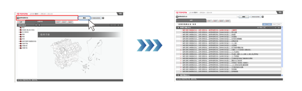
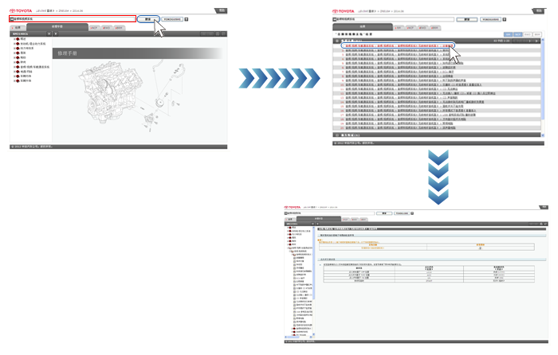
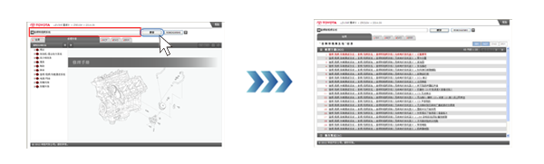
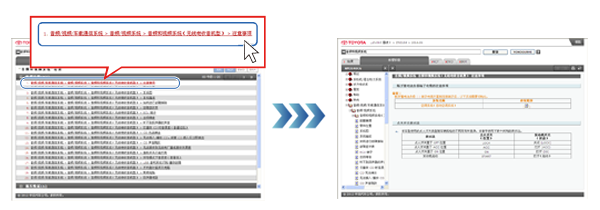
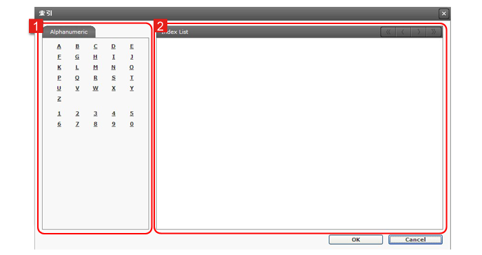
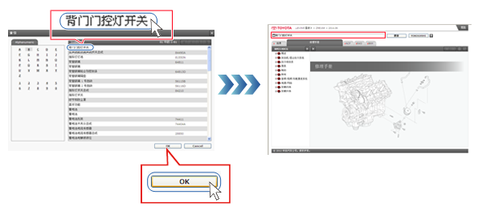
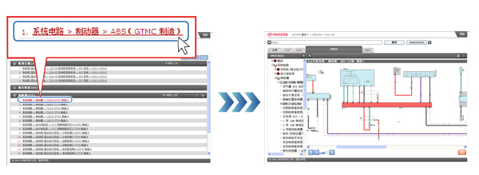
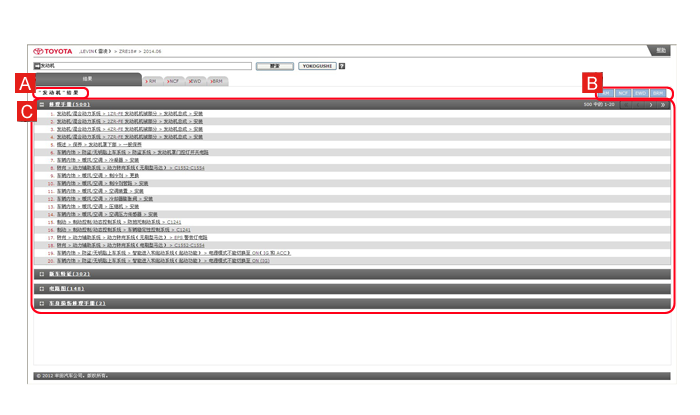

输入关键词并点击搜素。
将列出搜索结果。

提示
- 搜索时不可使用以下符号：“ * ”、“ ?", " ¥ ”、“ ~ ”、“ = ”和“ ^ ”。
- 搜索仅包括维修手册、新车功能和电路图。
可以通过关键词或 YOKOGUSHI 搜索手册。
使用关键词搜索时，输入零件名称和系统名称等关键词，可搜索包含这些关键词的手册。
（此搜索不包括通用手册。）
使用 YOKOGUSHI 搜索时，输入诊断代码，可在修理手册、新车特征和电路图中搜索相关信息。
通过诊断代码搜索时，关键词搜索和 YOKOGUSHI 搜索有以下区别。
搜索方法 |
搜索覆盖的手册和内容 |
| 关键词搜索 | 在修理手册中搜索故障代码的诊断程序 |
| YOKOGUSHI 搜索 | 在修理手册、新车特征和电路图中搜索有关故障代码的诊断信息。 |
关键词搜索或 YOKOGUSHI 搜索的结果在结果（搜索结果）标签中列出。在搜索结果列表中选择所要查看的项目，即可显示相应内容。
详细信息参见 搜索结果说明。
从关键词的搜索结果可以方便的打开手册内容。

输入关键词并点击搜素。 
提示
|
点击要查看项目的链接。  |
可以从索引中选择字母数字关键词。

| 1 | 字母数字标签 显示字母和数字索引字符。 |
|---|---|
| 2 | 索引列表 显示与字母数字标签中所选索引字符对应的列表。 |
点击索引字符。 |
从索引列表中选择一个关键词并点击 OK。  |
使用 YOKOGUSHI 时，输入诊断码即可在修理手册、新车特征和电路图中搜索相关信息。
输入诊断码并点击 YOKOGUSHI。 提示
|
点击要查看项目的链接。  |
搜索结果显示在结果（搜索结果）标签中。
点击所要查看项目的链接即可显示相应内容。

| A | 搜索结果等级 关键词搜索将显示””***“结果“（*** 为关键字)。 YOKOGUSHI 搜索将显示””***“的 YOKOGUSHI 结果“（*** 为诊断代码）。 |
|---|---|
| B | 手册标签 显示各手册是否有搜索结果。 如果有一个或多个搜索结果，显示为蓝色；如果没有搜索结果，显示为白色。 |
| C | 搜索结果 显示各手册中搜索结果的数量和项目。 项目以类别、章节、标题、内容顺序显示。 |